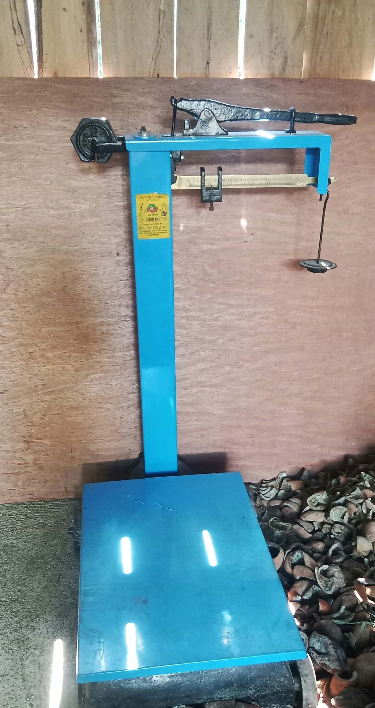
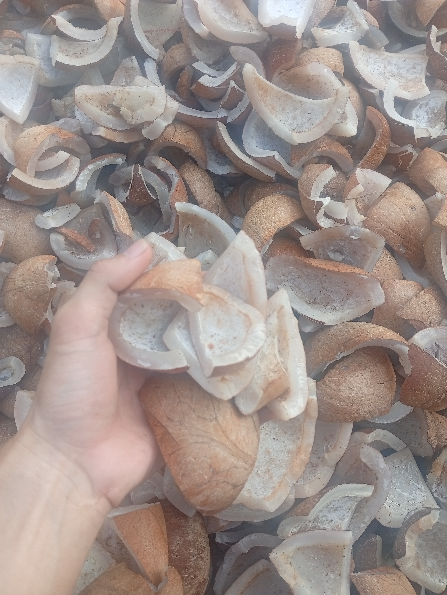
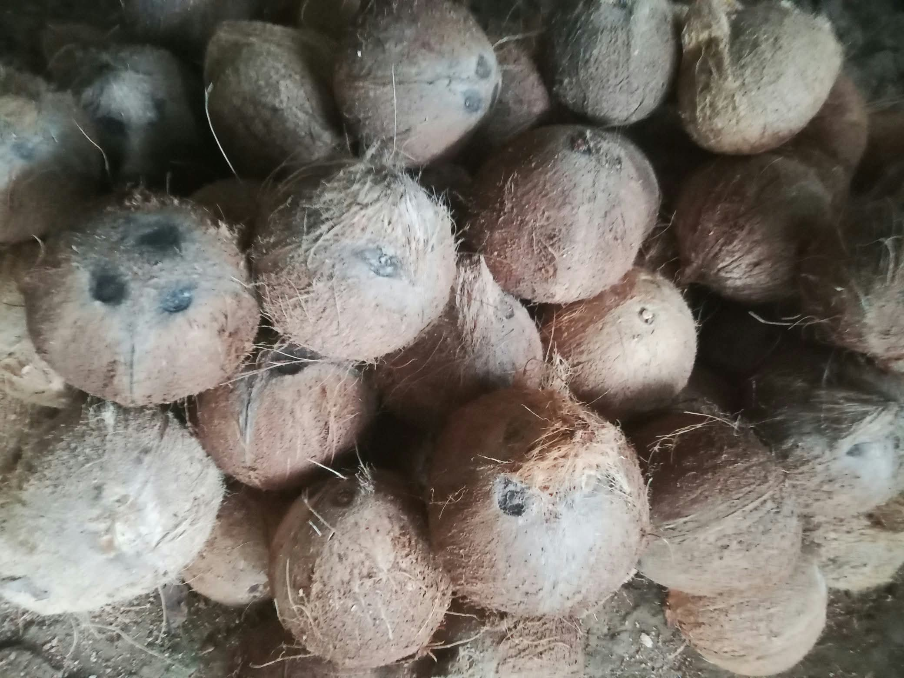
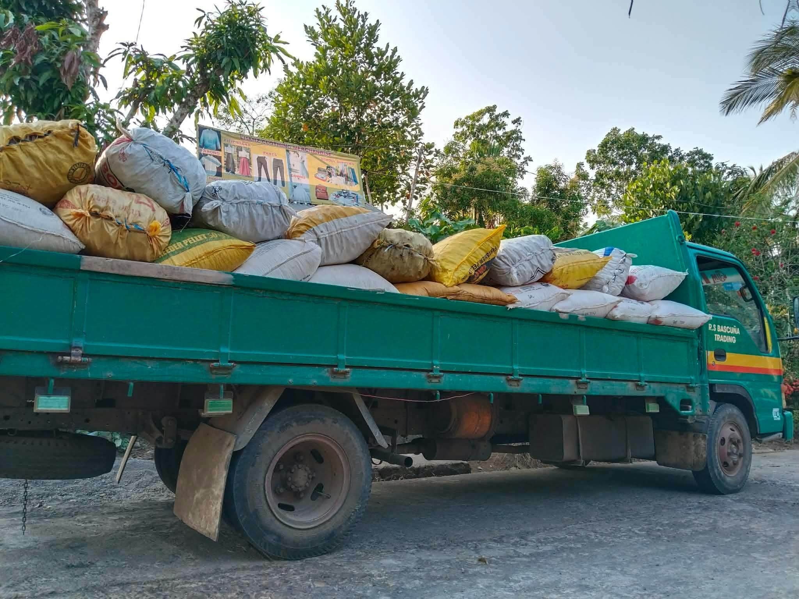
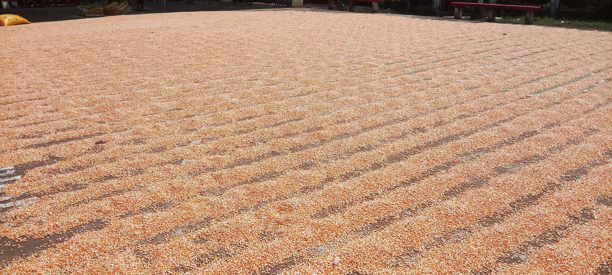
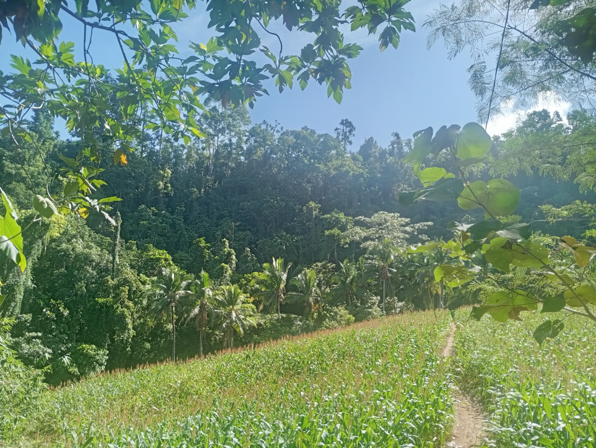
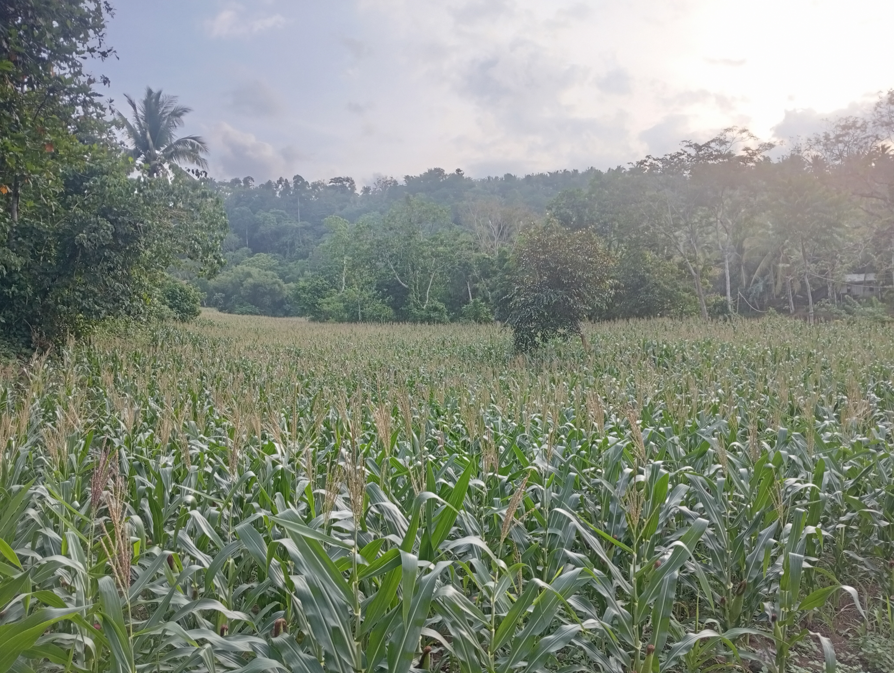
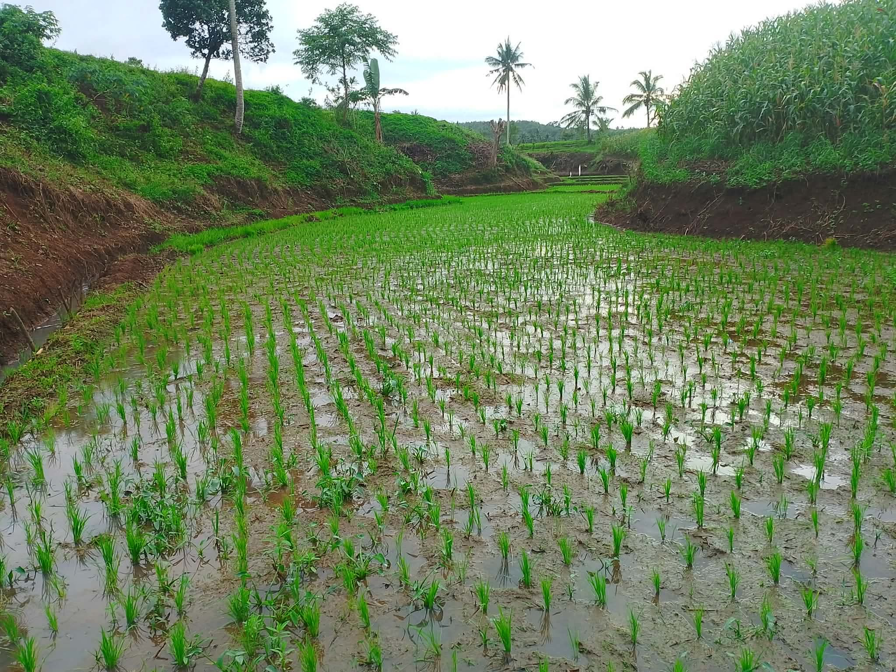
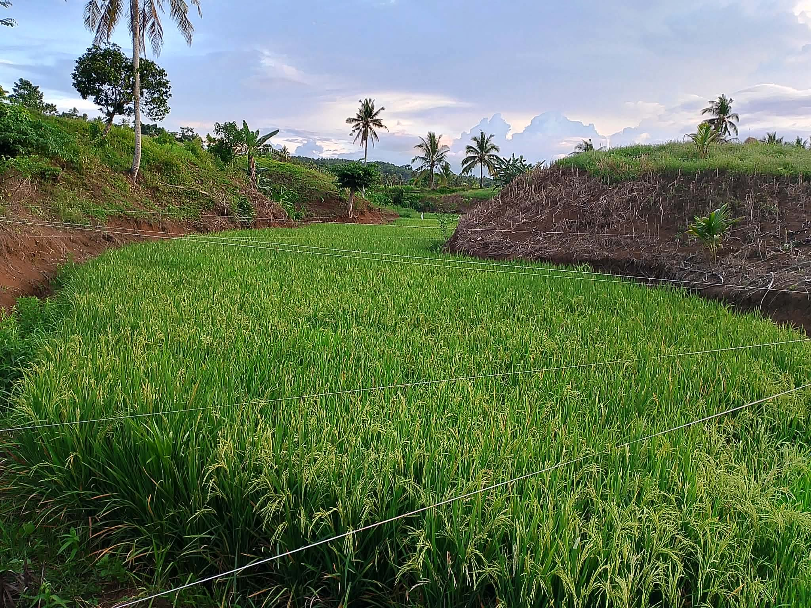
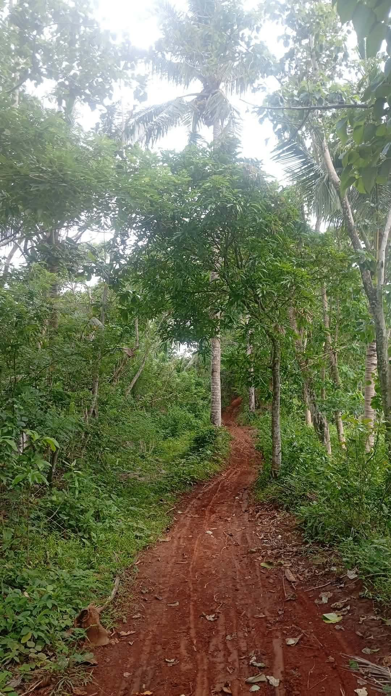

Samahan ng Masisinop
Sustainable Livelihood Program (SLPA) Aniog

Sustainable Livelihood Program (SLPA) Aniog
Sustainable Livelihood Program Association of Aniog (SLPA) Samahan ng Masisinop is a community that deserves a system designed to make business easier. We help local producers in Barangay Aniog to track their goods, record sales, and monitor their income effortlessly.













| Manage Your Products | Work Anywhere | Track Your Earnings |
|---|---|---|
| Easily check and update your current stock of agricultural products, supplies and raw materials. | Keep recording your sales even without an internet connection. The system will automatically update your records once you're back online. | Clearly see your starting capital, everyday business expenses, cash flow analytics and total profits through dashboard. |











Explore the farmlands, sloped fields, and primary harvest routes of Barangay Aniog. Here, members of Samahan ng Masisinop SLPA carefully grow fresh coconuts, grains, and root crops. We proudly honor these dedicated local farmers and sellers who power our community every day.